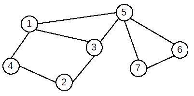
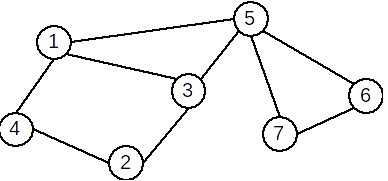
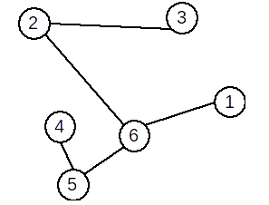
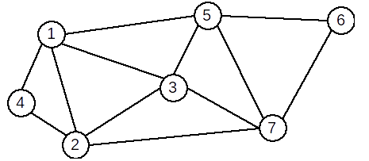
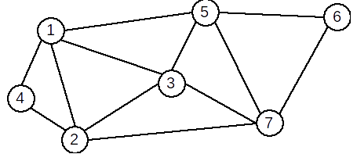

| LANȚ,CICLU Definiție: Se numește lanț o succesiune de vârfuri L=[x1,x2...xk] cu proprietatea că oricare două vârfuri consecutive sunt adiacente. Lanțul care conține numai vârfuri distincte, două câte două, este lanț elementar. Lanțul care conține numai muchii distincte este lanț simplu. Dacă muchiile unui lanț nu sunt distincte se numește lanț compus. Un graf neorientat care nu conține niciun ciclu se numește aciclic. |
 | Exemple: În graful de mai jos:[2,4,1,3,5,7] este un lanț elementar [3,5,7,6,5,1] este un lanț neelementar, |
| Graf conex. Componente conexe  | Definiție: Un graf neorientat se numește graf conex dacă pentru oricare două vârfuri x și y diferite ale sale, există cel puțin un lanț care le leagă, adică x este extremitatea inițială și y este extremitatea finală. Un graf cu un singur nod este, prin definiție, conex. Definiție: Se numește componentă conexă a unui graf G=(X,U) un subgraf H=(Y, V), conex, al lui G care are proprietatea că nu există nici un lanț în G care să lege un vârf din Y cu un vârf din X – Y. Un graf este conex dacă admite o singură componentă conexă. |
| ARBORE.PĂDURE Definiție: Se numește arbore un graf conex și aciclic. Observații:
Un graf care nu conține cicluri se mai numește pădure. Într-o pădure fiecare componentă conexă este arbore. |
 |
| Graf hamiltonian. Graf eulerian Definiție: Se numește graf hamiltonian un graf care conține un ciclu hamiltonian. Se numește ciclu hamiltonian un ciclu elementar care conține toate vârfurile grafului. Exemplu: Graful următor este hamiltonian. Un ciclu hamiltonian este: [1,4,2,3,7,6,5,1] ! Teoremă: Un G un graf neorientat. Dacă are n≥3 vârfuri şi gradul oricărui vârf verifică inegalitatea d(x)≥n⁄2 atunci G este hamiltonian.  |
Definiție: Se numește graf eulerian un graf care conține un ciclu eulerian. Se numește ciclu eulerian un ciclu care conține toate muchiile grafului. Exemplu: Graful următor este eulerian. Un ciclu eulerian este: [1,4,2,1,3,2,7,3,5,7,6,5,1] Teoremă: Un graf G = (X,U), fără vârfuri izolate, este eulerian dacă şi numai dacă este conex şi gradele tuturor vârfurilor sale sunt numere pare.  |